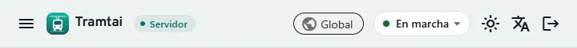
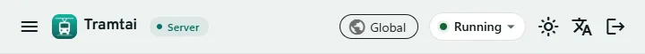
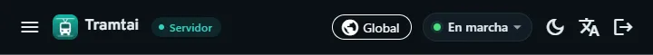
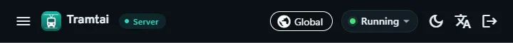

Dos entornosTwo environments
Tu Tramtai y el del servidor no comparten nada: cada uno tiene sus APIs, claves, sesiones de los CLI, historial y ajustes.Your Tramtai and the server’s share nothing: each has its own APIs, keys, CLI sessions, history and settings.
De un vistazoAt a glance
| Tu TramtaiYour Tramtai | El del servidorThe server’s | |
|---|---|---|
| ArrancaStarts | Al iniciar sesión (la app en la bandeja o solo el servicio) o cuando lo abresWhen you sign in (the app in the tray or just the service) or when you open it | Con el equipo, sin que nadie inicie sesiónWith the computer, with nobody signed in |
| CuentaAccount | La tuyaYours | tramtai en Linux; NT SERVICE\Tramtai en Windowstramtai on Linux; NT SERVICE\Tramtai on Windows |
| DatosData | Tu carpeta de Tramtai (en la portable, «datos-tramtai»)Your Tramtai folder (in the portable copy, “datos-tramtai”) | /var/lib/tramtai en Linux; %ProgramData%\Tramtai en Windows/var/lib/tramtai on Linux; %ProgramData%\Tramtai on Windows |
| Claves de los agentesAgents’ keys | El almacén cifrado de tu sesiónYour session’s encrypted store | El de la cuenta del servicio (Windows) o systemd-creds (Linux), con la CLIThe service account’s (Windows) or systemd-creds (Linux), set with the CLI |
| Se administra conManaged with | «tramtai …», la app, la terminal y la Web UI“tramtai …”, the app, the terminal and the Web UI | «tramtai-servidor …» como administrador, y la Web UI“tramtai-servidor …” as administrator, and the Web UI |
| Web UI desde otro equipoWeb UI from another computer | No, por defecto: escucha en 127.0.0.1No, by default: it listens on 127.0.0.1 | Sí, por HTTPS y con la contraseña del administradorYes, over HTTPS and with the administrator password |
Nada pasa de uno a otro: un espacio, una API o una clave del tuyo no existen en el servidor, ni al revés. Cada entorno acepta los términos por su cuenta.Nothing moves from one to the other: a workspace, API or key of yours doesn’t exist on the server, or the other way around. Each environment accepts the terms on its own.




PreguntasQuestions
¿Cómo sé en cuál estoy?How do I know which one I’m in?
La cabecera de la Web UI y la línea de estado de la terminal dicen «Servidor» o «Este equipo». Acerca de enseña el entorno, la cuenta y la carpeta.The Web UI header and the terminal’s status line say “Server” or “This device”. About shows the environment, the account and the folder.
¿Puedo pasar mis APIs al servidor?Can I move my APIs to the server?
No se copian: créalas de nuevo en el servidor, con sus claves. Así una clave de tu equipo nunca abre el servidor, ni al revés.They aren’t copied: create them again on the server, with their keys. That way a key from your computer never opens the server, or the other way around.
¿Por qué me avisa de otro Tramtai, del sistema?Why does it warn me about another Tramtai, a system one?
Porque en este equipo también corre el servicio del sistema, en otro puerto. Es otro entorno, con sus propias APIs y claves: no hace falta hacer nada.Because the system service also runs on this computer, on another port. It’s another environment, with its own APIs and keys: there’s nothing to do.
¿Con cuál habla la CLI?Which one does the CLI talk to?
«tramtai …» con el tuyo; «tramtai-servidor …» (o «tramtai --servidor …») con el del sistema, y cada salida que cambia algo empieza por «Servidor:».“tramtai …” talks to yours; “tramtai-servidor …” (or “tramtai --server …”) to the system one, and every output that changes something starts with “Server:”.
¿Por qué me pide aceptar los términos otra vez?Why does it ask me to accept the terms again?
Cada entorno guarda su propia aceptación: la de tu equipo no vale para el servidor, que la pide al instalarlo.Each environment keeps its own acceptance: your computer’s doesn’t count for the server, which asks for it when you install it.
En la terminal: la línea de estado dice «Servidor» o «Este equipo». «tramtai» abre la tuya y «tramtai-servidor», la del servidor.In the terminal: the status line says “Server” or “This device”. “tramtai” opens yours and “tramtai-servidor”, the server’s.